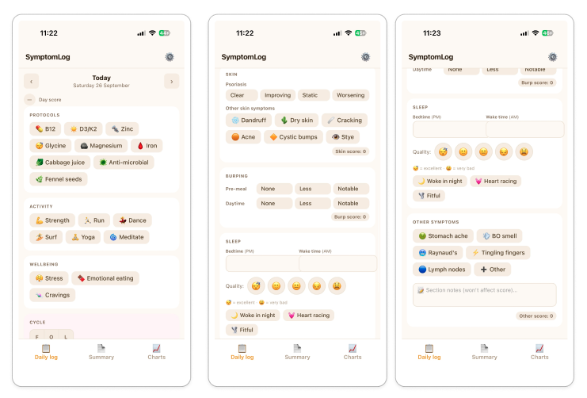
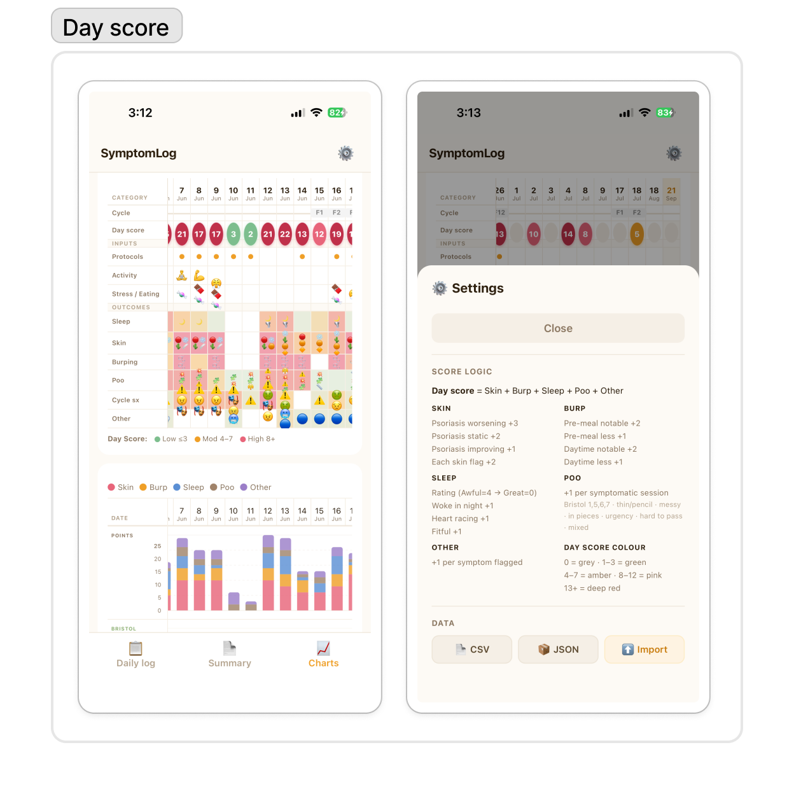
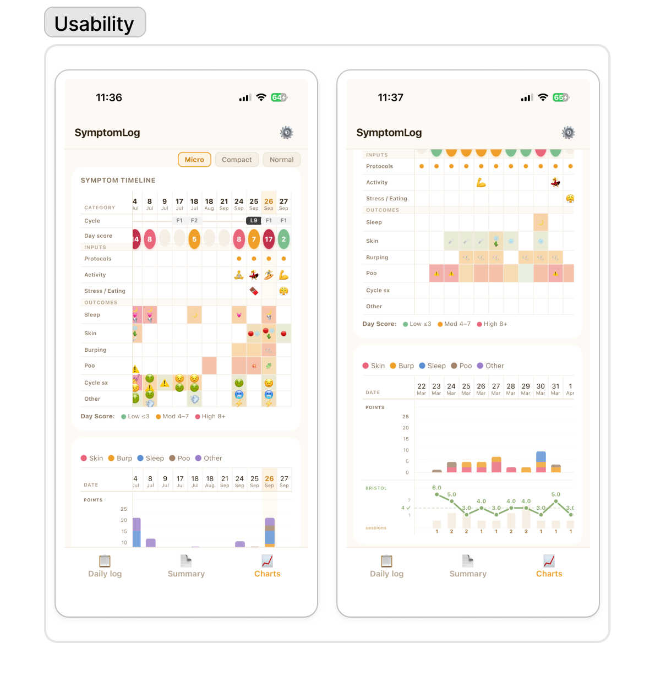

Symptom Tracking V1
What a lesson in product management. Drunk with my newfound Claude-enabled power, I packed too much into this next pass. I used it for about a month, interating over that time, but would call this app a failure.

The possibility of logging everything that could be valuable quickly became a trap

Charting multiple inputs and symptoms together was a challenge.I wanted to find a way to pull up to a higher-level view; the day score you see on the top line was a first pass
Once again, I used Claude to develop a PWA that I could use on my phone. The code is too messy to be worth sharing, but I did come away from the project with a stronger sense for what works. Namely:
- The simple, delightful logging interface continued to work well, even for so many items; tapping icons feels better and was easier to keep up than typing data into an excel sheet
- Finding a clear way to summarize the overall picture to something like a macro score is valuable + worth pursuing.
But it was too much. Two reasons why:
- I didn't need the complexity of the charting + scores on my phone. I'd prefer it live more cleanly on my desktop. Next time, I'll develop for that transition.
- I tried to add too much too quickly. I'd re-start from scratch with simpler functionality to ensure clean code.

Making sense of the data on the mobile screen was a rabbit hole, even after optimizing the interface sizing.